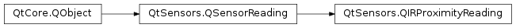

QIRProximityReading¶
Synopsis¶
Functions¶
- def
reflectance() - def
setReflectance(reflectance)
Detailed Description¶
The
PySide2.QtSensors.QIRProximityReadingclass holds readings from the IR proximity sensor.The IR (infra-red) proximity sensor detects proximity by beaming out infra-red light and detecting how much of the light returns.
The biggest limitation of this technology is that there is no reliable way to turn the reflectance values into distances unless both the item being detected and the ambient conditions are known.
QIRProximityReading Units¶
The sensor reports reflectance as a decimal fraction in the range of 0 - 1. That is, 0 indicates nothing was detected within the range of the sensor and 1 indicates the infra-red signal returned at the full power level that it was sent at.
With some IR sensors, it is quite uncommon to reach the top and the bottom of the value range, and some parts of the range ends might not be obtainable at all. This is due to the behavior of the sensor hardware. With these sensors, the absolute value of reflectance should never be used directly. Instead, applications should react to the relative change of the reading values. Use
PySide2.QtSensors.QProximitySensorif it is only necessary to check if something is close to the device or not.
-
class
PySide2.QtSensors.QIRProximityReading(parent)¶ Parameters: parent – PySide2.QtCore.QObject
-
PySide2.QtSensors.QIRProximityReading.reflectance()¶ Return type: PySide2.QtCore.qreal
-
PySide2.QtSensors.QIRProximityReading.setReflectance(reflectance)¶ Parameters: reflectance – PySide2.QtCore.qrealSets the reflectance value to
reflectance.
© 2018 The Qt Company Ltd. Documentation contributions included herein are the copyrights of their respective owners. The documentation provided herein is licensed under the terms of the GNU Free Documentation License version 1.3 as published by the Free Software Foundation. Qt and respective logos are trademarks of The Qt Company Ltd. in Finland and/or other countries worldwide. All other trademarks are property of their respective owners.